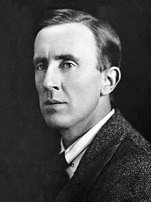
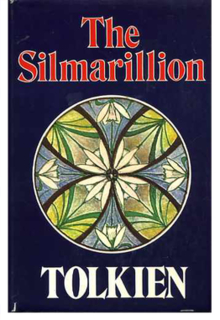
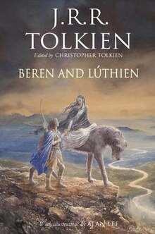

Course: Fantasy & Religion
Lecture #5: J.R.R. Tolkien
NOTE: Text in Highlight is Optional

BIOGRAPHY OF TOLKIEN:
In 1891 Mabel Suffield traveled to South Africa to marry Arthur Reuel Tolkien, where he was working as a bank manager for the Bank of Africa, having decided that his prospects were better than in Lloyds Bank Birmingham.
John Ronald Reuel Tolkien was born in Blomfontein in January 1892. The climate was bad for Ronald's health, but his father could not leave his business, so it was arranged that Mabel and her two sons (Hilary was born in 1894) should return to Birmingham. Before he could join them, Arthur contracted rhematic fever and died in 1896.
The family settled in the Hamlet of Sarehole outside Birmingham, where the boys mixed with the locals and picked up dialect words like "gamgee" (cotton wool. Mabel taught them basic Latin and French.
Tolkien loved stories such as The Princess and the Goblin, Arthurian Legends and the Fairy Books of Andrew Lang, which included the story of the dragon Fafnir and Sigurd. He writes later: "I desired dragons with a profound desire."
In 1900, Mabel became a Roman Catholic. This upset her family and no further financial help was forthcoming from them.
Tolkien was educated at King Edward VI Grammer school in Birmingham. This meant moving away from Sarehole and into the town. His mother died of diabetes in 1904, leaving the education of her sons in the hands of her priest, a loud, affectionate and kind man whose friendship was important to the boys. the loss of his mother gave Tolkien a deep sense that nothing could last forever. His Catholic faith became very important to him at this time and was to remain the keystone of his life. He also, at this time, began to invent a language of his own.
Tolkien failed to get a scholarship to Oxford at his first attempt. In 1910 he got an Exhibition scholarship to Exeter College, Oxford and studied with Joseph Writh, who had raised himself from an illiterate millhand to become professor of philology. Having taught himself Gothic at school, Tolkien now learnt Welsh and Finnish (the latter becoming the basis for the Elven Quenya).
When Tolkien was 16 he met Edith Mary Bratt, who was three years older than he and also an orphan. However, Father Francis forbade him to see Edith until he was 21. So, in 1913, when he was 21, Tolkien contacted Edith, but they had grown apart and she had become engaged to someone else. Tolkien persuaded her to break her engagement and become engaged to him.
He graduated in 1915 with first class honors in English and joined the Lancashire Fusiliers. In 1916 he and Edith were married, then he was posted to France. Tolkien fought at the Somme and was brought home as an invalid with Trench Fever. Two of his three closest friends died in the War.


In early 1917 he began to work on what was to become The Silmarillion - his great work of language and mythology--while convalescing at Great Haywood. His Tale of Beren and Luthien Tinuviel always remained his favorite. Edith, he said, was his Luthien.
From 1918-1920 he was an assistant on the Oxford English Dictionary and in 1920 he became a reader in English language at Leeds University, where he later held the chair from 1924-25. In 1926 he returned to Oxford as Professor of Anglo-Saxon and later became Merton Professor of English (1945-59).
Tolkien made his reputation as a Middle English scholar in the 1920's with A Middle English Vocabulary (1922) and Sir Gawain and the Green Knight (1925). Among his later works was the 1936 lecture, later published, Beowulf: The Monsters and the Critics.
In order to support his wife and four children, Tolkien took on the work of marking school certificate exams and working as an external examiner for other universities. Tolkien didn't publish very much academic research. He did, however, have a heavy teaching load. When he lectured, he did so in the dramatic manner of an Anglo-Saxon bard in a mead hall.
W.H. Auden wrote to Tolkien: "What an unforgettable experience it was for me as an undergraduate, hearing you recite Beowulf. The voice was the voice of Gandalf."
At some point in the mid 30's, Tolkien joined the Inklings. At C.S. Lewis's prompting, The Hobbit was developed from the bedtime stories Tolkien told his children. He submitted it to the publisher, Stanley Unwin, who gave it to his ten-year-old son, Rayner, to read. Rayner's report was favorable and the book was published in 1937.
Unwin wanted a sequel, another book about hobbits, but Tolkien didn't have one. He began to write again, the first few chapters of what was to become The Lord of the Rings. He then began to ask himself how these Hobbits fitted into the grand linguistic and mythological design of the Silmarillion. In investigating this, the new book began to develop a darker, grander style.
The Lord of the Rings took 12 years to complete. Tolkien said, "It is written in life blood, such as that is, thick or thin, and I can no other."
Because it was so large, The Lord of the Rings was published in three parts. The Fellowship of the Rings (1954), The Two Towers (1954), and The Return of the King (1955). It was praised by critics of the stature of Auden. Tolkien's own pessimism about the development of rural England chimed in well with reader's concerns over conservation and nuclear destruction.
Persecuted by his fans --"being a cult figure in one's own lifetime I am afraid is not at all pleasant" -- Tolkien retreated to Bournemouth, where Edith died in 1971. After her death, Tolkien returned to Merton College.
In 1972 he was made an honorary doctor of letters by Oxford university and awarded the CBE in 1973. In 1973 he died and was buried beside Edith in Wolvercote Cemetery.
His great life's work, The Silmarillion, was finally published in 1977, edited by his son Christopher.
THE THREE AGES OF MIDDLE EARTH
Before getting into The Silmarillion I want to give a synopsis of the three ages of Middle Earth which will hopefully help in understanding Tolkien's fantasy.
THE FIRST AGE: Is basically what is in the story of the Silmarillion so I won't go into much detail as we will deal with that book later in this discussion.
In brief, middle earth was created by Eru (the one) thru the beings called the Valar, who are best understood as corresponding to the angels of Jewish/Christian traditions. They might take on shapes familiar to those to whom they appear--in this case elves or men.
Tolkien said, in The Road Goes Ever On that three Valar appeared on occasion to elves as "persons of majestic, (but not gigantic) stature, vested in robes expressing their individual natures and functions. These forms were always in some degree radiant, as if suffused with light from within."
After the creation of Middle Earth, the Valar dwelled in the Blessed Realm (Arda, the undying lands, and Valinor, among other names.) Tolkien has said that the Valar come there, because of their love and desire for the Children of God, for whom they were to prepare the realm. The first age ends, as does the Silmarillion, with the defeat of Morgoth and one of the Silmarilli being carried by Earendil to the blessed realm and set in the sky with his ship.
THE SECOND AGE opened with the settlement of Numenor, the westernmost land of Middle Earth. This island kingdom was granted by the Valar to the Edain, men of Middle earth who had fought with the elves against Morgoth. They were forbidden to go farther west to the shores of the blessed realm, which seems to have been forbidding them to seek the immortality possessed by the elves.
Sometime around the year 500 in the second age, Sauron, one of the rebellious Valar and a servant of Morgoth, became active in Middle earth. About a hundred years later, ships of the Numenoreans were seen off the coasts of Middle earth, and the power and interest of the Numenorians in Middle earth grew stronger.
Around the second age 1000, Sauron had chosen Mordor for his base of operations and had begun building his fortress, Barad-dur. between 1200 and 1500, Sauron tried to enlist the elves. Most refused to listen to him, but the elf smiths of Eregion became involved with him learning certain great skills of forging.
Around 1500, the elf smiths were at work forging the RINGS OF POWER; they completed the three elf rings late in the century. At this point, Sauron was secretly forging the ONE RING which could ultimately control all the rest; the three which belonged to the elves, the seven which belonged to the dwarves, and the nine rings which men possessed for a time.
Into the one ring Sauron diverted much of his own power. with it, his power was enormous, but w/o it he was somewhat weakened though still dreadful, and to mortals, seemingly invincible. if the Ring were destroyed Sauron would be ruined.
Sauron and the Elves were at war in 1693. Sauron invaded the country east of the Misty Mountains and swept away everything before him. It was at this time that Rivendell was settled by Elrond and the elves who fled with him from Sauron.
But in 1700, a mighty Numenorean navy landed on the west coasts of Middle earth and drove Sauron out of the country, and farther into the east.
The Numenoreans settled on the coasts of Middle earth while Sauron's power grew in the east. However, the Numenoreans, becoming restless, began dividing over the next 400 years and during the latter half of the 23rd century the corrupted men who wore the nine rings appeared and became Sauron's slaves. They were known as the NAZGUL OR RINGWRAITHS.
Over the next several hundred years the Numenoreans were dividing between the rebellious, who were increasingly aggressive toward the inhabitants of Middle earth and those who came to be known as the Faithful.
When civil war came, Sauron was at the center. The Numenoreans captured Sauron and held him for over 50 years. However, during this time Sauron convinced the king to break the ban of the Valar and sail to the shores of Valinor. Outraged at the presumption of the rebel Numenoreans, the Valar called on Eru to relieve them of their guardianship and in 3319, Eru destroyed Numenor and all the Numenoreans except the faithful, who escaped to Middle Earth. This is Tolkien’s Story of Atlantis.
Of special concern for The Lord of the Rings is Elendil, a leader of the Faithful who founded the kingdoms of Arnor in the north and Gondor in the south. Elendil ruled Arnor directly; his sons, Isildur and Anarion, ruled Gondor in his name.
Sauron, too, escaped and returned to Mordor, where about 100 years later he launched an attak on Gondor and captured the tower of Minas Morgul.
In 3430, a great alliance of men and elves was made, and Elendil and an army was led against Sauron. Elendil was killed but Sauron was destroyed in his bodily form, though his spirit fled. Isildur cut the One Ring from Sauron's dead hand and unwisely kept it for himself.
The spirit called Sauron passed out of knowledge in Middle earth, and his Ringwraiths disappeared. Thus ended the second age in the year 3441.
THE THIRD AGE:
Within two years of the opening of the Third age, Isildur was killed by orcs. This story is told in The Lord of the Rings and is crucial to the events that begin
or ō dra in with The Hobbit. If Isildur had thrown the One Ring into the volcano Orōdruin in Morder, the threat of Sauron would have been greatly reduced and Frodo would have been born into quite a different world.
But, Isildur had kept the Ring as a prize of war and had discovered its ability to make the wearer invisible. Two years later when his party was attacked by orcs, Isildur put on the Ring and escaped by swimming away in the Anduin River.
The ring seems to have betrayed him and slipped off his finger, to be lost for more than 2500 years until found by the hobbit Deagol, who was murdered for it by his cousin Smeagol (Gollum). Revealed to the eyes of the pursuing orcs, Isildur was slain by their arrows.
By the end of the first 1000 years of the 3rd age, Gondor was powerful but the northern kingdom suffered steady deterioration. For the first time in recorded history, hobbits appeared, settling the region called eriador, where in time the Shire would be located. However, all was not well, as the huge forest called Greenwood became corrupted and was believed occupied by a Ringwraith and other evil creatures. It became known as Mirkwood.
Now appeared in Middle earth a different kind of Guardian, perhaps really Valar, but known as Wizards or Istari and allegedly coming from the undying lands. Angelic or not (Tolkien is said to have remarked that Gandalf was an angel), the wizards came not to destroy the enemies of Eru and Middle earth but to assume human form and encourage, advise and support in a limited way those inhabitants of Middle earth who could be persuaded to recognize and resist the power of the enemy.
Whether thru obedience to Eru or because of their own love for his creatures, the wizards (apparently only 5 existed) became subject to most human limitations, including hunger, thirst, weariness and bad temper, and human and angelic temptations, including the desire to dominate others and to receive homage from them. Not even Gandalf was free from a touch of vanity.
They possessed a knowledge of the occult and used their magic to good effect on occasion, but obviously such foreknowledge as they possessed was limited and likely to be vague. Like men, elves and dwarfs, they had to make their choices of behavior not out of sure foreknowledge but from their own moral and spiritual natures. They had freedom to exalt themselves or to serve the ends for which they were sent.
During the second thousand years of the third age there was increasing turmoil and in 1636 a great plague swept thru Gondor, spreading and killing many Hobbits in Eriador. In 2050, the last king of Gondor, descendent of Isildur, was killed in single combat with, what was later revealed, to be the Lord of the Nazgul.
In the early 2060's, the Wizards and chief elves began to suspect that it was Sauron who was to blame and Gandalf the Grey went to investigate. However, Sauron went east and remained in hiding for almost 400 years. When Sauron returned to Middle earth the wizards and high elves (including Elrond and Galadriel) formed the White Council in 2463, with the wizard Saruman as its head, though Galadriel would have preferred Gandalf.
During these years the ONE RING was rediscovered and carried into the depths of the Misty mountains by Gollum, where it remained for nearly 500 years, extending the life of its finder for as long as he kept it. It was then found by Bilbo Baggins, from the shire in The Hobbit.
Sauron's presence was felt in much of Middle earth. The Misty mountains were inhabited by Orcs. Dragons made raids in the north and even the Shire suffered.
In 2851, the White council met and confirmed from Gandalf that the force in Dol Guldur was indeed Sauron who was trying to kill the heir of Isildur, and trying to draw to himself all the Rings, but especially the One Ring. Gandalf advised the council to attack Dol Guldur, but Saruman would not agree to it.
Bilbo Baggins was born in 2890 in the Shire. Aragorn, son of Arathorn II and direct descendent of Isildur, was born in 2931. Aragorn was two years old when his father was killed by orcs and the child was taken to Imladris Rivendell to be raised by Elrond, who kept secret his identity as Isildur's heir.
The events recorded in The Hobbit took place between the spring of 2941 and 2942. Within 10 years of that time Sauron dropped his secrecy and prepared Mordor for war. In 2956, Gandalf and Aragorn met and became friends, and Aragorn began his wandering life as a Ranger and a warrior.
In 2968 Frodo Baggins was born. On September 22, 3001, he and Bilbo (33) celebrated his coming of age and Bilbo's 111th birthday, and the story of The Lord of the Rings begins to unfold.
Before going to The Lord of the Rings we will look at The Silmarillion which people who knew him called Tolkien's "work of his heart"
THE SILMARILLION
The Silmarillion: After the publication of The Lord of the Rings in 1954-55, Tolkien was in the same position as after The Hobbit, the publisher wanted a sequel. But like in 1937, he had nothing ready and not anything even in mind.
What he had was what today is called a prequel. It existed as many manuscripts in many forms. He never got it ready for publication in a way that satisfied him, though he worked on it till he died. It was published posthumously as edited by his son Christopher.
Nevertheless, this work occupied him for far longer than his better-known works. His better-known works were in a way only offshoots, side-branches, of the immense chronicle/mythology/legendarium which is the "Silmarillion'. Tolkien was working on the seed of a section of The Silmarillion as early as 1913 when he began to write "The story of Kullervo', a prose and verse romance' never yet published and resembles in outline the story of Turin, eventually chapter 21 of the 1977 Silmarillion.
In late 1916, as a convalescent on leave for trench fever, he wrote a much more extended and continuous account of elvish story, and published in 1983-4 as the two volume Book of Lost Tales. Other tales were published in 1985 as The Lays of Beleriand.
In 1937 Tolkien submitted The Lost Road to his publisher as a possible successor to The Hobbit. It met a confused reception from the publisher's reader, who seems to have seen only the poem and the section of the prose "Quenta Silmarillion" and it was gently rejected by Unwin as "a mine to be explored in writing further books like the Hobbit rather than a book in itself".
The point of all this is that The Silmarillion's development was very complex. Going thru much writing and re-writing, with layer upon layer of correction.
Tolkien also produced several sets of "Annals" covering the same material, some written in Old English now in the History of Middle Earth, IV-V, X-XI.
Christopher Tolkien points out that this mass of material was a 'fixed tradition' but never a 'fixed text'. A vital part of this tradition was a novel solution to an old mythological problem: the origin and types of elves. Jacob Grimm in his Teutonic Mythology tried to solve the problem by saying "dark Elves" were sort of in between "light elves" and "Swart Elves", not so much downright black, as dingy.
At the heart of Tolkien's account is a different distinction. The Elves are not separated by color (black, white and 'dingy'), but by history. The 'Light Elves are those who have 'seen the light', the Light of the two trees which preceded the Sun and Moon, in Aman, or Valinor, the undying land in the west.
The 'Dark Elves' are those who refused the journey and remained in Middle earth, to which many of the Light elves however, returned, as exiles or outcasts. The Dark elves who remained in the woods of Beleriand are also, of course, naturally described as 'Wood Elves."
Some accounts mingle the Dwarfs with the Elves, but Tolkien makes them two distinct species that never mingle. This became blurred in the minds of men, but Tolkien's aim was to "preserve the evidence", to rescue his ancient sources from vagueness or folly.
This generated story, the complex story of the elves' wanderings, separations and returns, summed up as well as anywhere in Chapter 8 of The Hobbit.
For most of the Wood Elves. . .were descended from the ancient tribes that never went to Faerie in the West. There the Light elves and the Deep elves and the sea elves went and lived for ages and grew fairer and wiser and more learned, and invented their magic and their cunning craft in the making of beautiful and marvelous things, before some came back into the Wide World. In the Wide World the Wood Elves lingered in the twilight of our sun and moon, but loved best the stars; and they wandered in the great forests that grew tall in lands that are now lost.
Two other points about The Silmarillion have to do with language and nationality. Tolkien said as forcefully as he could (for many in authority saw him writing fairy tales as a distraction from his proper job of being a language professor) that all his work was 'fundamentally linguistic in inspiration.'
What was perceived as a hobby by the university, for him it was fundamentally the invention of languages. The 'stories' were made rather to provide a world for the languages rather than the reverse. Thus, the major root of the Silmarillion and all that followed from it was the invention of the elvish languages, Quenya 'Elf-Latin', the language of the light elves, and Sindarin, the language of Beleriand, of the Wood Elves.
Even closer is to say that the real root was the relationship between these languages, with all the changes of sound and semantics which created two mutually incomprehensible languages from one original root, and the whole history of separation and different experience which those changes implied. Such developments were Tolkien's major professional field, like those which generated, for e.g., Gothic (East German) , Norse and English from one original language.
Tolkien's views of NATIONALITY were straightforward and logical. He tried to reverse the decline in English legend and restore to England something like the body of lost legend which it must once have had. This is why Tolkien spent much effort in writing "The Annals of Beleriand" and others in Old English: to provide a chain of communication between the imagined far past and the first beginnings of English history.
Tolkien would have liked to create a 'mythology' for his own people, to anchor it in the counties of the west midlands, and simultaneously to preserve in it what scraps remained of the myths and legends there must once have been.
It was a quest for a flavor of antiquity, this atmosphere, this virtue that led Tolkien to spend so much time and effort in creating different sets of 'annals', in different languages, imagined as the sources for the Silmarillion. He created his own historical tradition.
The effort of doing all this was extremely great, and the returns rather minimal, for the sense of depth and age, the ability to read a work on two chronological levels at once, are rather hidden matters. Still the sense that there was a deep and old tradition behind it, surfacing in the poems recited by Aragorn or Bilbo or San Gamgee, had been a major part of the texture even of The Lord of the Rings.
Perhaps that success could be repeated in The Silmarillion. In any case, one may feel, this was what Tolkien all his life most wanted to do.
A PARALLEL MYTHOLOGY:
It can be said that even though this is a complex tradition, in broad outline Tolkien's image of the history of the First Age remained relatively stable. It can be divided, if arbitrarily, into three main sections. These will deal with the 1977 version of The Silmarillion.
THE FIRST SECTION: consists of the 'Ainulindale' (Ain u lin dale) and the 'Valaquenta". They deal with the creation of the world, the rebellion of one of the Creator's subordinate spirits, Melkor, and the decision by some of thse subordinate spirits (the Valar), including Melkor, to bind themselves within the world. To them this means Aman, the undying lands, as well as Middle Earth, the lands of mortality.
The early chapters deal with the appearance of the elves, the decision of the other Valar to imprison Melkor in order to protect the elves, the migration of the Light elves from Middle earth to Aman, and the unrest and destruction caused there by the released Melkor and an elvish faction.
Here the "Silmarils' appear. They are jewels made by the greatest of the elvish smiths, Feanor, and they contain within them the light of the Two trees of Valinor, the trees which lit the world before the rising of the sun and moon.
Once the Trees are poisoned by Melkor and his spider Ally Ungoliant (Ungō laut), their light survives only in the Silmarils. But when Feanor is called on to give them up, to be broken to bring the trees back to life, he refuses, only to find that Melkor has already stolen them.
Feanor, his sons, and others decide to leave Aman to pursue Melkor and regain the Silmarils, and he and his sons swear an oath of vengeance on anyone who would hold or take or keep a Silmaril from their possession.'
In keeping this oath they commit two acts of violence or treachery: They steal the ships of the elves who dwell on the shores of Aman, killing many; and, after crossing back to Middle Earth, from which they had been brought by the Valar, they burn the ships and refuse to return for those of their supporters (including Galadriel) left behind.
Meanwhile, the Valar, dismayed by the loss of the Trees and the defection of Feanor, create the Sun and Moon to replace the Trees, but cut off communication between Middle earth and Aman.
The third and longest section, (chap 10, 12-24) deals with the wars in middle earth between the elves and Melkor (renamed Morgoth), and the ill-fated attempts to regain the Silmarils. Into these wars are drawn men and dwarfs while Morgoth deploys orcs, balrogs and dragons. There is a lot of treachery and internal feuding.
The two longest chapters deal with the human heroes Beren, who regains a Silmaril at the cost of his hand, and Turin the ill-fated: The Silmaril recaptured by Beren goes from one owner to another, always bringing disaster with it.
In the end Earendil, a hero of mixed elvish/human ancestry, sails with its aid to Aman, to beg the Valar in Valinor for forgiveness and assistance to Middle Earth. This is granted; Morgoth is overthrown; and the two remaining Silmarils are recaptured, only to be lost again by the final workings out of the oath of Feanor and his sons.
Earendil's Silmaril, however, shines from the prow of his ship, which has been set in the sky as a star and a sign of hope to Middle Earth.
RELIGIOUS MEANINGS
From this summary one can see that the Silmarillion bears a kind of relationship to Christian myth. The rebellion of Melkor, and his subordinate spirits, is analogous to the fall of Lucifer and the rebel angels. Lucifer calls himself "the prince of this world', and Melkor calls himself 'Master of the fates of Arda'.
The origin of the fall is the same also, for the sin of Lucifer was the urge to put his own purposes before those of God, and that of Melkor was 'to interweave matters of his own imagining with the 'theme of Iluvatar (the Creator).
This 'fall of the Angels' also leads in both mythologies to a second fall: the Fall of man and the exile from Eden, and the loss of Elvish innocence and the emigration from Aman (which becomes an exile) in The Silmarillion. Finally, Earendil, the half human/elvish emissary who obtains forgiveness and rescue from the Valar, bears a more distant similarity to Christ and the promise of salvation.
That said, there are very marked differences as well, especially centering on the Silmarils, though which there is no close Christian parallel. These differences shed more light on the nature of The Silmarillion, for after all it would seem pointless, even presumptuous, just to rerun the Christian myth merely in a work of human imagining.
There is in fact an ambiguity running through the Silmarillion, which is this: The four most powerful of the Valar are clearly the spirits of earth, water, air and fire, (respectively Aule, Ulmo, Manwe and Melkor) where Melkor is the spirit of fire.
Meanwhile Feanor, the maker of the Silmarils and the elf responsible for the second fall, is actually a nickname and means again "Spirit of Fire". But Feanor is an ambiguous character, proud, selfish, vengeful--but also skilled, ambitious, demanding justice.
At the heart of his fall is the refusal to give up the works of his own craft, crying out bitterly, when he is asked to surrender the Silmarils: "For the less even as for the greater there is some deed that he may accomplish but once only; and in that deed his heart shall rest."
Tolkien's work in fact give a continuum of creative urges, from wholly evil (Melkor's self-centered urge of the magician), to wholly legitimate (his own, the right to fantasy and to 'sub-creation'). But they shade into each other.
To Tolkien, the "fortunate sin" was not in the Garden of Eden, but the Tower of Babel, the presumption which by tradition created the multiplicity of human languages from a single root.
Tolkien built the concept of the 'fortunate sin' into his own mythology, when Iluvatar declares that even Melkor in his sin "shall prove but mine instrument in the devising of things more wonderful."
He left a space for the traditional fall of humankind. There is no Garden of Eden in the Silmarillion, but when humans do enter Middle Earth from the east all that is known about them to the elves, who are imagined as the preservers of these traditions, is that something dreadful had happened to them already, a 'darkness' which 'lay upon the hearts of men' and which was connected with an unknown expedition of Morgoth.
The Silmarillion does not contradict Genesis; but it does offer an alternative view of the origin of sin, in a desire not for the "knowledge of good and evil", but in the desires for creation, mastery, and power.
These desires are worked out in the long history of elves and humans, which occupies sections two and three of the Silmarillion. It is hard to follow, a lot of names and genealogies. However, a clear structure for the work can be made out if one once masters the central idea of the divisions among the elvish tribes.
The most basic of these is the distinction between the Light elves, the Calaquendi, who reached Valinor and saw the light of the two trees before they were poisoned, and the Dark Elves, the Moriquendi, who refused the journey.
The subtlety and the tension in the stories depends upon carrying in one's head a string of distinctions between elvish groups and a whole series of pedigrees and family relationships. The audiences of the Icelandic sagas could do this, but readers of modern novels are not used to it and easily miss most of what is intended.
THE "HUMAN STORIES" OF THE ELVES:
Another way of penetrating the structure of the third section of The Silmarillion is to observe that it is largely organized around the falls of three different ‘Hidden Kingdoms': Doriath, Nargothrond, and Gondolin. Each is set up by an elf-king.
Each kingdom prospers for a while, even a long while, till each is located by and willingly or unwillingly acts as host to a mortal, a man, -- Beren, Turin, or Tuor. These stories of human involvement with the elves were above all the works of Tolkien's heart. Christopher Tolkien noted that the tale of Tuor and the fall of Gondolin was the first of the Silmarillion complex to be written in 1916 or 1917.
The story of Beren and Luthien remained deeply personal to Tolkien till he died: To him, Luthien was his wife Edith. He had the names of 'Beren' and Luthien' carved on his and his wife's shared tombstone, a striking identification.
In his essay "On Fairy Stories', Tolkien remarked that the 'oldest and deepest desire' satisfied by fairy stories is to tell tales of The Great Escape: the ‘Escape from Death'. He added, "The human stories of the elves are doubtless full of the escape from deathlessness."
The only such stories are those written by Tolkien. Beren escapes from death--he dies, but is brought back from the dead, alone among men, by the songs of Luthien which move even Mandos, keeper of the halls of the dead, to pity. Luthien also escapes from deathlessness, for she is allowed to choose death and finally accompany her husband.
ANGELS AND THE EVANGELIUM
At the end of all versions of the Silmarillion comes the tale of Earendil, another story of escape from Middle Earth which blends the escapes of human and elf, Earendil being descended from both.
In it, Tolkien leaves the mode of heroic chronicle and returns to that of mythology. Like St. Brenden, Earendil continually explores to the west in search of the undying lands. Meanwhile, the remaining sons of Feanor attack his settlement to get back the Silmaril from his wife, Elwing. They fail, Elwing throws herself into the sea and the Valar turn her into a bird. Carrying the Silmaril she joins her husband far out at sea.
Because of her possession of the Simaril, they are able to get to the Valar where they are hailed by a messenger as ..."bearer of light before the Sun and moon...star in the darkness, jewel in the sunset, radiant in the morning."
This herald's announcement in Tolkien has a biblical ring. In Tolkien the people looking up from darkness and seeing a great light are not the patriarchs and prophets of the Old Testament story, but the inhabitants of Middle Earth; and the great light they see is not Christ coming to harrow hell and release them, but the Simaril announcing the rescue mission of the Valar.
The setting is not Christian but pagan, or at least pre-Christian. Tolkien's Silmarillion closes with an analogue of intercession, forgiveness and salvation coming necessarily from outside a ruined Middle earth, just as it began with analogues of the Fall of angels and the fall of man.
Tolkien knew that Angelos originally meant 'messenger' but there could be several kinds of messengers. Gandalf is one--very unlike the traditional image of an angel, with his long beard and short temper, but an 'angel' just the same.
Earendil is a second, announcing the coming of the Valar to Morgoth and Middle earth alike. Galadriel, in a way, could be a third for she bears some share of the responsibility for the fall of the Noldor and the exile from Middle earth, joining in the rebellion against the Valar because of her yearning 'to see the wide unguarded lands of Middle earth and to rule there a realm at her own will"
In some traditions, including early English ones, some of the angels exiled from heaven with Satan became devils, but others, more undecided or more neutral, became elves. At judgement day some of these may regain forgiveness and salvation and return to their old home, as Galadriel does at the very end of The Return of the King.
Christopher Tolkien has stated that "to read the Silmarillion one must place oneself imaginatively at the time of the ending of the third age--within Middle earth, looking back". This is certainly correct.
If Tolkien had a literary model for The Silmarillion it was probably the Prose Edda of Snorri Sturluson, a compendium of pagan mythological materials made by a man who was himself not at all a pagan, but who did not wish to see the old traditions of the poetry of his native tongue vanish forever.
The Silmarillion, very much unlike The Lord of the Rings stays resolutely on the level of “high imitation" or above, eschewing humor, detail, fine texture. It is able, conversely, to appeal to qualities virtually ruled out in even the most ambitious commercial fantasies: stoicism, nonchalance and irony.
The Silmarillion is most likely to be seen--paradoxically, for things were meant to be the other way around--as a further and immensely detailed "appendix' to The Lord of the Rings. The 'lost lore that was used in the making of a new thing' is, in this case alone, no longer lost. It tells a great deal about the 'making', but it also returns attention to the 'new thing.'